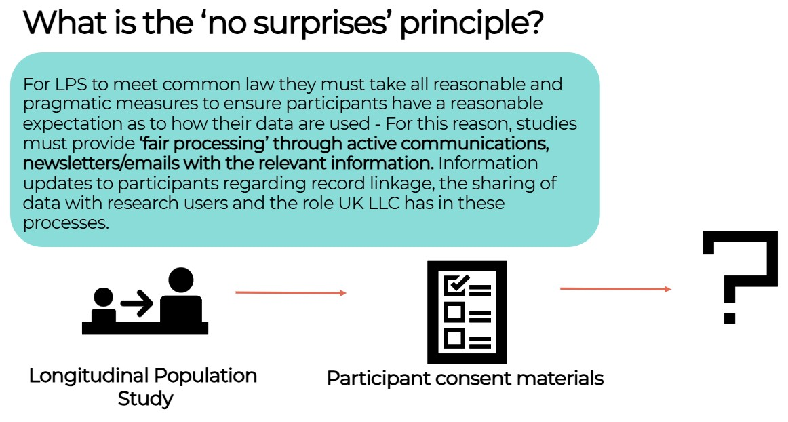
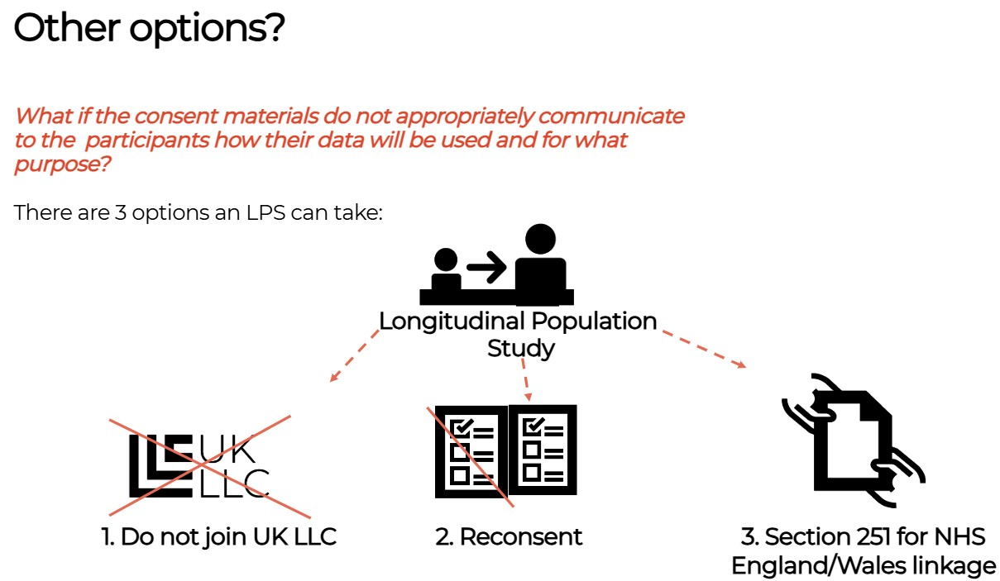
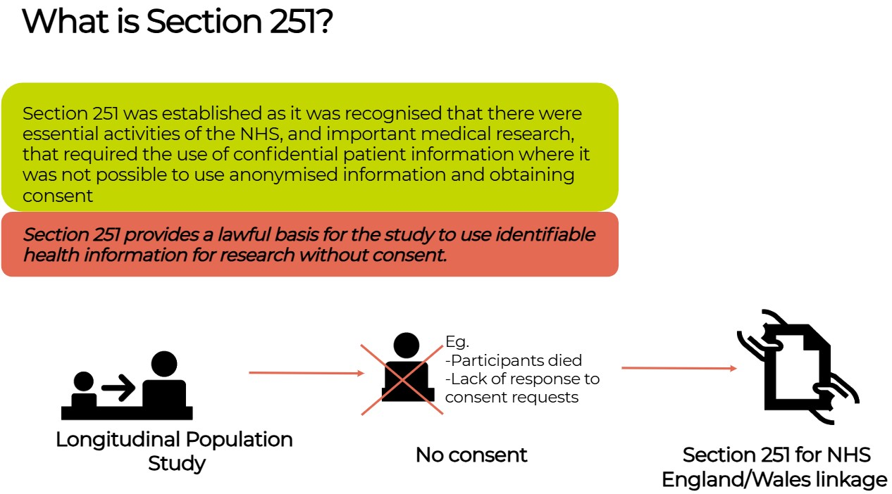

Background information#
Last modified: 14 Sep 2026
This section provides background information on some of the primary legal frameworks that support the use of data in Longitudinal Population Studies (LPS). While UK General Data Protection Regulation (GDPR) applies to the processing of personal data and is covered extensively elsewhere. This page therefore focuses on common law duty of confidentiality and alternative legal basis, such as Section 251 support, and participants rights and expectations, and how this underpins ethical principles in LPS research.
To caveat, this guidance reflects our understanding and does not constitute legal opinion. If in doubt, you should seek your own legal counsel.
A BRIEF INSIGHT INTO THE LAW: the law is notoriously complex. This includes the law that controls the use of data in LPS. At a very high level, the following points are critical to understand:
Statute is legislation which are written and passed by the UK Parliament or devolved assemblies. This provides codified law. The Data Protection Act is an example;
Some law is not consistent across the UK, while English & Welsh law are broadly aligned within our context, Scottish law can be different in important ways;
“Common Law” is the collection of precedents set in court cases which are then applied more widely. This includes very important principles, such as the Common Law Duty of Confidentiality. Common Law can be difficult to interpret as many cases can issue decisions which impact on principles and these are typically made in different contexts – the transferability of these judgements to our context therefore includes an element of subjectivity;
Regulators are tasked with setting the codes of practice which must be followed to apply statute and common law in practice. For example, the Information Commissioner’s Office is the regulator for Data Protection law and the Health Research Authority (HRA) is the regulator for using Patient Information in research;
• Legislation, case law and regulations interact with fundamental human rights (e.g. EU and United Nation codified rights) and ethical principles (e.g. Declaration of Helsinki for health research). These interactions can be highly complicated and can introduce tensions between individual rights (of the participant) and broader societal benefits and rights (the public goods longitudinal research is designed to produce).
We note the guidance and codes of practice provided by the regulators are often broad and generic, and their application to LPS context can be subjective. Much of the guidance in this resource hub is designed to support LPS to apply these requirements appropriately and to avoid the potential misapplication of generic requirements to our specific context.
UK LLC have worked with participant and public volunteers to develop a series of infographics designed to explain this to participants.
UK General Data Protection Regulations (GDPR)#
The UK GDPR applies to the processing of Personal Data by LPS. Most LPS process identifiable data given that they hold participant contact databases and administer processes which require the use of identifiers (mailing information and data collection exercises, conducting fieldwork or study assessments, linking to participant records including via UK LLC). LPS therefore manage Personal Data (broadly, the legal term for identifiable data) and therefore UK General Data Protection Regulations (UK GDPR) and Common Law Duty of Confidentiality apply.
There is clear guidance and a broad consensus that LPS should not be using consent as the UK GDPR/DPA legal basis for processing participant Personal Data. This is because the expectation for specific consent with UK GDPR/DPA is typically not possible within longitudinal research. Rather, LPS should make use of alternative legal basis within the regulations:
Performance of a task carried out in the public interest (Article 6(1)(e) in the GDPR), and, where sensitive personal information is involved:
Scientific or historical research purposes or statistical purposes (Article 9(2)(j) in accordance with Article 89(1)).
This does not mean that consent is not necessary, it is the primary basis for meeting Common Law requirements (see below) and is central to ethical expectations and building trustworthy relationships. We also note that changes introduced via the incoming Data (Use and Access) Act 2025 may change this interpretation over time.
Most LPS pseudonymise their data to remove identifiers and replace these with an ID number. Where pseudonymous data can be linked back to the identifiers pseudonymous data, it is still Personal Data under UK GDPR/DPA.
UK GDPR makes a distinction between data and sensitive data: all health data are considered sensitive as are other classes of information including many demographic characteristics. The processing of these will need additional safeguards.
UK GDPR sets out a series of rights for individuals. For research, there are derogations in place which mean that not all UK GDPR rights need to be applied. We note that some of these derogations, such as the right to object, are not implemented by many LPS due to ethical and trust considerations.
The Information Commissioner’s Office is the regulator for UK GDPR/DPA.
What are the requirements to meet Common Law Duty of Confidentiality?#
LPS must establish a legal basis for addressing Duty of Confidentiality.
Common Law Duty of Confidentiality (which has the same status as statute law) applies when a person provides an LPS with information in the expectation that it will be treated in confidence. Whilst it can be debated as to what data is given with an expectation of confidence, it is our view at UK LLC that participants provide data to their study (e.g. in a questionnaire or fieldworker interview) with an expectation that this information is confidential. However, studies can set a reasonable expectation as to how this confidential data are used. For example, that survey data will be de-identified and shared with legitimate researchers for public benefit research.
For an LPS to process Personal Data therefore it is therefore the case that they must make ‘best endeavours’ to set a ‘reasonable expectation’ about how this processing will impact on the confidentiality of the data. For example, the onward sharing of de-identified data with researchers or the linkage of study data with participants’ records or data about the place in which participants live.
To demonstrate compliance with Common Law Duty of Confidentiality LPS must either:
(i) collect informed consent where the scope of the consent covers the scope of the intended processing;
(ii) implement a mechanism to set aside Common Law Duty of Confidentiality requirements (such as Section 251 support to use NHS records without consent);
(iii) by fully anonymising the data;
(iv) or by meeting a public interest test.
The approach to addressing Common Law varies across the UK. For example, Section 251 only applies in England and Wales and only applies to health records; in contrast the Digital Economy Act also enables Common Law duties to be set aside and applies across the UK, although cannot be used to support data from organisations whose primary function is health services (i.e. the NHS). Whereas, the public interest test is not seen as a standard approach for the use of health records in research in England, this is the default outside of consent in Scotland.
In practice consent is the preferred mechanism however attempts to collect this retrospectively are likely to result in partial response where likelihood of responding is patterned by health and social characteristics.
UK LLC do not recommend permanently anonymising longitudinal data, as the destruction of the link between data and participant identifiers seriously curtails the future potential of the data. There are many examples of LPS taking advantage of unforeseen opportunities which rely on the retention of participant identifiers and there is no reason why this won’t continue to be the case.
There is some debate within the longitudinal research community as to whether address-based linkage are subject to the duty of confidentiality. UK LLC view that place-based linked data as having a duty of confidence, and that those which do not in some cases (e.g. national rainfall data) do gain that duty of confidence when linked to a participant and their wider participant data record.
How do you meet the Common Law Duty of Confidentiality?#
This is most likely to be either consent or a legal mechanism to set aside the requirement to address this duty. However, confidential data can be shared subject to a public interest test and while this is not widely used in England & Wales for research, it is the norm in Scotland.
Anonymous data do not carry a duty of confidence. While it is important to note that this typically is not a sufficient mechanism to cover the breadth of use of data across the research, it may have a specific role for the onward use of data such as when research findings are released as Safe Outputs from a TRE.
LPS must take all reasonable measures to ensure participants have a ‘reasonable expectation’ as to how their data are used – known as the ‘no surprises’ principle.

Consent#
UK LPS are often called the ‘consented studies’, but the role of consent in these studies is complicated. All LPS participants are volunteers who have chosen to join the LPS, and all have the right to withdraw whenever they want. In this sense all participation is ‘consented’ in that it is based on an active and informed relationship. LPS may also seek consent for specific aspects of activity in the LPS, such as using genetic information or linking to health records. However, as LPS can run over decades, it is hard to keep consent up to date and reflecting changes in technology, best practice and new ways of working, such as UK LLC. This means for LPS ‘consent’ is difficult to manage.
From a legal perspective, consent is:
NOT the basis by which LPS comply with UK GDPR and data protection law - scientific research is a permitted purpose in its own right; and
OFTEN the basis by which the Common Law Duty of Confidentiality is met. In common law, information given under an expectation of privacy (e.g. information from a patient to their doctor), should stay private unless permission to share it is in place.

Seeking consent is often not possible or leads to partial response where likelihood of responding is patterned by health and social characteristics and therefore biases research or excludes some harder to reach communities such as children in the care system, or those in temporary accommodation.
Sometimes seeking consent is not possible, if the person has died or no longer has capacity to make a choice (e.g. someone with dementia). For this reason, there are laws which make it possible to use data without breaching common law. These laws were used during the coronavirus pandemic but also exist in general to help ensure research is fair and inclusive. For the use of NHS data in England, this law is called Section 251.
Section 251#
Section 251 provides a lawful basis for an LPS to use identifiable health information for research without consent (e.g. where all the participants in an LPS have died or where lack of response to consent requests will likely bias the research and lead to research inequity and harms). Section 251 only applies in England and Wales.
While it is not possible to seek consent and then seek Section 251 for non-responders, it is possible to seek Section 251 and then attempt to seek consent over time when it is practical (e.g. during a fieldwork home visit). This is seen as best practice, so this, over time and with continued resource can provide the “exit route” from Section 251 to consent as the legal basis for linkage.

LPS can apply to HRA CAG for Section 251 Support which allows Common Law duties to be set aside. They can recommend that an LPS can utilise Section 251 where consent is not practicable and frequently on the condition that:
LPS contact their own Patient and Public Involvement and Engagement (PPIE) activity to understand and accommodate participant expectations.
LPS do all that is practical to contact participants, providing fair processing information about the data use and a means to opt-out.
LPS send regular updates about how health records are used and remind participants how to opt-out.
‘NHS National Data Opt Outs’ are honoured – this is a national scheme in England which allows members of the public to stop their data being used for research unless consent is in place.
When a researcher obtains Confidential Patient Information from a health and adult social care provider in England with Section 251 support, they should expect that, once that organisation has stated its compliance with the national data opt-out policy then the records of patients who have registered a national data opt-out will have been removed. This may mean that the dataset provided might not be complete.
For avoidance of doubt where the approval for access to the data relies upon Section 251 support (i.e. approval under the NHS (Control of Patient Information Regulations) 2002 (regulation 2 or 5)) support then all data disclosed under this approval will be deemed to be confidential patient information even where the specific disclosure does not contain any health or care information. From: NHS Digital – when does a national data opt out apply.
As a general rule - if a participant has opted out of allowing their data to be used for research or planning through their GP surgery or online, a study will not be able to access their health records even if they decide to agree to linkage through the study. You can find out more about the National Opt-out here.
When researchers receive data, where national data opt-outs have been applied, there is a potential to introduce bias to their studies which researchers will need to consider. For example, there might be higher levels of opt-out across certain geographical areas, age groups or specific conditions that might impact on the results of studies. From: NHS Digital – what the national data opt-out means for researchers.
Utilising the Digital Economy Act (DEA):#
The DEA provides a means to meet Duty of Confidentiality for the use of non-health routine records in public good research. To use the DEA the UK LLC must be accredited to UK Statistic Authority standards for a secure data processing environment. The DEA applies across the UK but does not apply to health data. The DEA will provide the legal basis for Duty of Confidentiality but LPS participating in non-health linkages via UK LLC will still need to meet their ethical requirements to ensure transparent data use and ‘no surprises’ and provide a means to object. Consent may be used as part of meeting the study’s ethical requirements.
UK LLC Confidentiality Due Diligence Panel#
UK LLC has worked with NHS England’s Advisory Group for Data (AGD) to formalise a consistent review process. As part of the review framework, UK LLC has set up a Confidentiality Due Diligence Panel consisting of experts in Data Protection, Research Governance and public contributors. The Panel advises on whether new partnering LPS have established a basis for addressing their Common Law Duty of Confidentiality appropriately and ensured compliance with the principle of ‘no surprises’. For each LPS application the Panel is required to review the LPS consent materials (consent forms and participant information sheets).
UK LLC conducts an NHS England approved due diligence review of each LPS’ legal basis. The UK LLC Confidentiality Due Diligence Panel includes senior sponsor representation (ethics, governance and legal data protection leads) from the University of Bristol and public contributors. The Panel advises whether each LPS has established a basis for addressing their Common Law Duty of Confidentiality appropriately and ensured compliance with the principle of ‘no surprises’. The Panel reviews each LPS’ consent materials (consent forms and participant information sheets) to identify if there are any statements that either limit or introduce ambiguity into the scope of an LPS’ proposed data processing. Evidence from this process is provided to data owners (e.g. NHS England, Office for National Statistics) for their records and due diligence purposes. The minutes from the panel are published on the UK LLC website.
FAQs about UK LLC